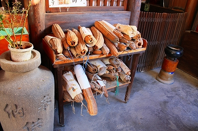

へちま薬師/愛知県名古屋市
名古屋市東区にある東充寺はへちま薬師と呼ばれ、病気平癒の寺として地元では人気のお寺だ。
門前には南無へちま薬師如来。
お寺は市街地にあり、そんなに広くない。
しかし周りをビルに囲まれながらも境内は木造の建物が並び落ち着いた雰囲気を醸し出している。
で、門を潜ってみる。
正面にあるのが扉が閉まっていて分からなかったが多分本堂。
そして右手に問題のへちま薬師堂がある。
薬師堂脇の手水鉢あたりが凄い事になっている。
へ
ち
ま
だ
ら
け
な
ん
で
す
わ
・
・
・
まるで鍾乳石のように大量のへちまがだら〜んとぶら下がっている。
その多くは乾燥しているが、中には青々としたモノもある、という事は奉納したてホヤホヤ？
中には何を勘違いしたのかひょうたんも混ざっていた。
見れば熨斗（ノシ）の付いたへちまもチラホラ。礼儀正しい事だ。

で、気を取り直して薬師堂正面に。
当方目下健康状態異状ナシ！なので特にお願いする事もないが、折角だから何かお願いしておこう。
最近視力が落ちてきたのでその辺を薬師サマにお願いしておこうかな。あ、そうそう、以前、医者に肝臓がどうのこうのって言われてたっけ。
どうせ脅しだろうけど一応そっち方面も。
あと、最近たま〜に腰とか肩が痛いような気がするのでそれもついでに、と。あとはアレでしょ、コレでしょ…
俺、不健康じゃん！
薬師堂の前にも数多くのへちまが積まれている。
右にも

左にも
一体なんでこんなにへちまが奉納されているのだろうか。
その答えは250年前に遡る。
宝暦9（1759）年、この寺の住職であった温空和尚が托鉢中にお腹が痛くなり気を失ってしまった。
その夢の中で温空和尚はお告げを聞くのだ。
「ただちに7、8寸ばかりのへちまに呪文の書付を結びつけ紙に包み、床の下深く納めよ。さらば痛みはたちどころに去る。これは鳳来寺伝統の秘法だ。夢ゆめ疑うことなかれ」
これを実行するとあら不思議。痛みは段々引いていくではありませんか。
それ以来、このお寺はへちま薬師のお寺として大勢の病気に悩む人が訪れるようになったとさ。めでたしめでたし（市原悦子の声で御唱和いただけたら幸いです）。
てなわけで現在の祈祷システムは以下の通り。
まず最初は祈祷用の小さなへちまを門前で購入し、それで病人の患部をなでてこのお寺に持ってくる（郵送可だそうで）。
小さなへちまは病魔の依り代なのだろう、それを以ってこの寺で病気平癒を祈願するのである。
そして無事病気が治ったら大きいへちまを奉納して御礼の印とするのだという。
賽銭箱の上に置いてあったへちま。

ありがとうの文字が泣かせる。
柱に下がるのはへちまの絵馬。そしてその後にはテレビ塔の前を通る大名行列というシュールな絵柄の絵馬が。
絵馬ついでに。昭和8年のもの。妙に色っぽい絵馬だなあ。
あと絵馬といえば小錦の絵馬も。
絵馬は両方とも平成元年9月のもの。右の大絵馬は後から作り直したものか。
この前々年に大関昇進を果たしたものの膝痛が原因で調子が上がらず、角番になったりならなかったりの繰り返し。またこの時期、師匠の高砂親方が亡くなったり、弟弟子が飲酒トラブルで廃業したりと小錦の相撲人生の中でもかなり辛い時期だったといえよう。
そんな時期に奉納したこの絵馬の意味は大きい。
横綱昇進 膝痛平癒と並び記されているが、この寺に絵馬を奉納する、ということは本意は後者にあるのだろう。
ちなみにこの絵馬が奉納された平成元年9月場所は5勝10敗と負け越し。しかしその次の九州場所では念願の（あの小錦男泣きのシーンで有名な）幕内初優勝を飾る事になる。
相撲人生のどん底と栄光がめまぐるしく交錯しながらも膝の痛みを抱え続けて相撲を取り続けなければならなかった力士がすがった薬師如来である。
夜中に独り小さな小さなへちまで膝を撫でていたのだろうか？小錦。
角界のヒールと呼ばれた男の、誰にも見せなかったであろうその姿を（勝手に）想像するだけであたしゃ涙目ですわ…
尚、このお寺には宝永5（1708）年に奉納された小錦の絵馬もある。江戸時代の同じ四股名をもつ力士の絵馬である。
手水鉢の奥にはおびんずるさまが満面の笑みをたたえている。

ああ、撫で撫で専用棒があるぞ。
かつて番割観音十番で見たが、名古屋には多いのだろうか？ほかではあまり見たことないが。

その奥にはさらに小さな厨子が連続していた。
小さいながらも奥の深いお寺であった。
東充寺のホームページはこちら。
参考文献；名古屋街かど歴史散歩 山田寂雀著 郷土出版社刊
2008.11.
珍寺大道場 HOME